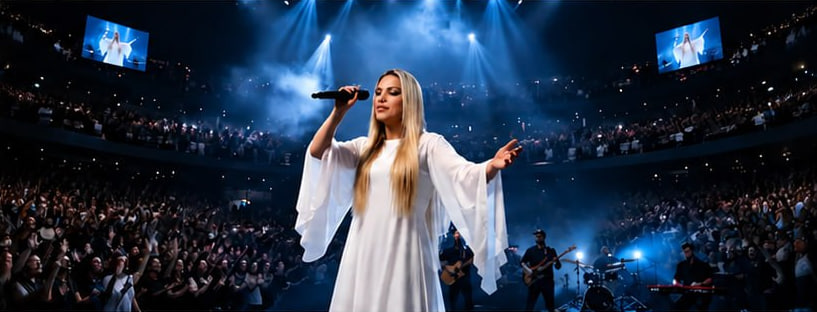
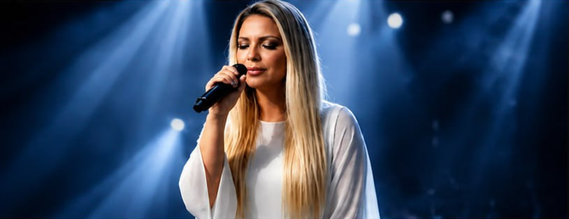
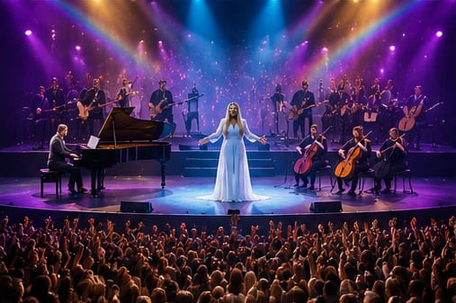
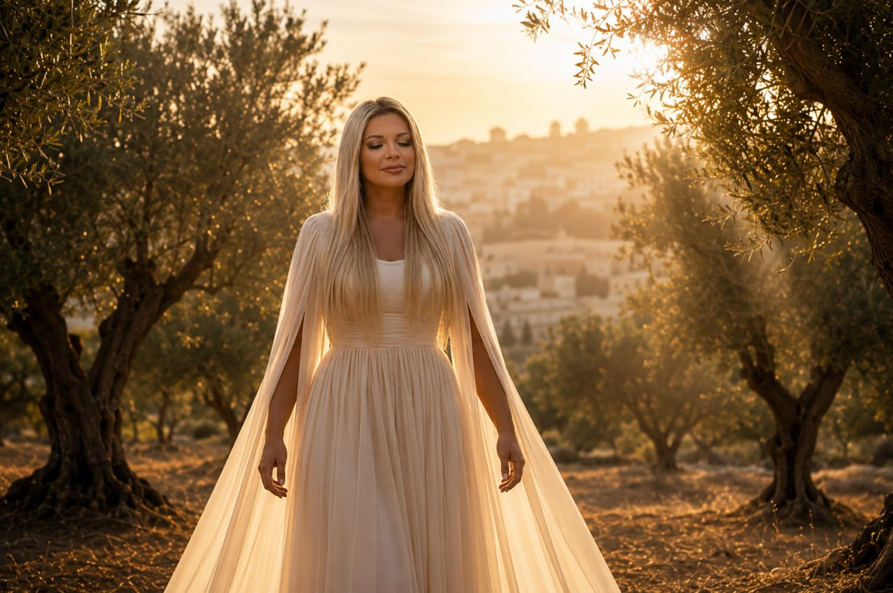
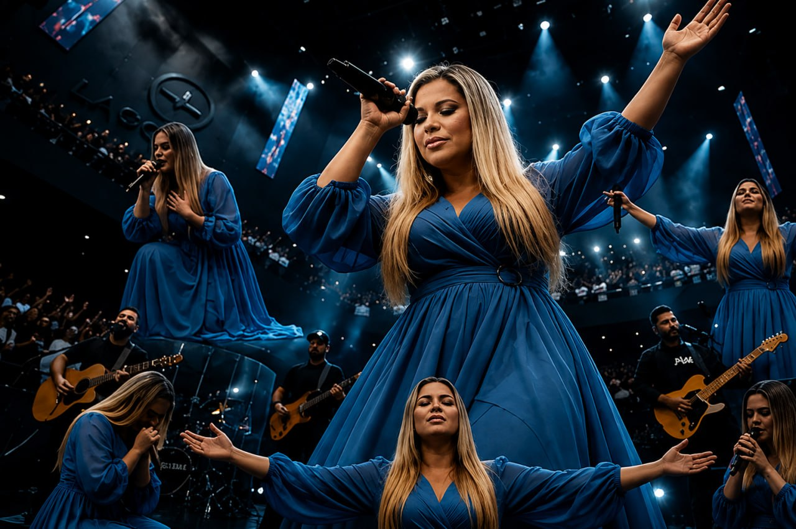

Monte das Oliveiras
Nancy Hannah
O Espírito Santo me deu este louvor ♡
Canções de fé, adoração e propósito para tocar corações e anunciar o amor de Deus.
Nancy Hannah nasceu para transformar fé em música. Cada canção carrega uma mensagem de esperança, cura e renovação espiritual.
Saiba mais sobre Nancy ♡Nancy Hannah

Nancy Hannah
Nancy Hannah

Nancy Hannah
Nancy Hannah
Assista agora ao meu mais novo lançamento e seja impactado pela presença de Deus.
▶ Ver no YouTubeNancy Hannah é cantora gospel, adoradora e mensageira da fé. Seu ministério nasceu do desejo de levar vidas à presença de Deus por meio da música.
Conheça minha história ♡


Os louvores da Nancy têm me sustentado nos dias mais difíceis.— Ana Paula
Cada canção é uma palavra de Deus que transforma minha vida.— Carlos Eduardo
A presença de Deus é tão forte ao ouvir suas músicas.— Mariana Santos
Será uma alegria levar a mensagem de Deus através da música para o seu evento, igreja ou conferência.